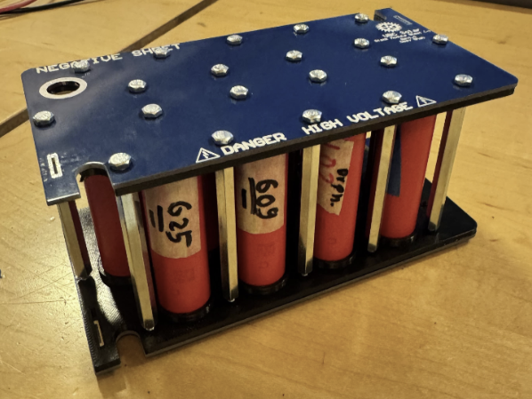

Battery Pack Design for Solar EV
UBC Solar — Jan 2025 to Mar 2025
Designed and developed a 32S13P Li-ion battery pack for UBC Solar’s race vehicle,
delivering 5.25 kWh at 120 V. The design emphasized cooling efficiency, safety,
and modularity, validated through CFD-based thermal modeling.
Key Highlights
- Achieved 7–8 mΩ contact resistance using a non-welded configuration.
- Refined CAD layout to fit within a 25 × 20 × 8 inch enclosure.
- Validated cooling airflow via Ansys & Altair CFD — 15 % temperature improvement.
- Automated OCV + impedance testing in Python for 700 + cells (50 % faster).
- Designed custom PCBs in Altium and 3D-printed fixtures for prototyping.
Tools Used
SolidWorks | Altium Designer | Ansys & Altair CFD | Python | Composite Fabrication